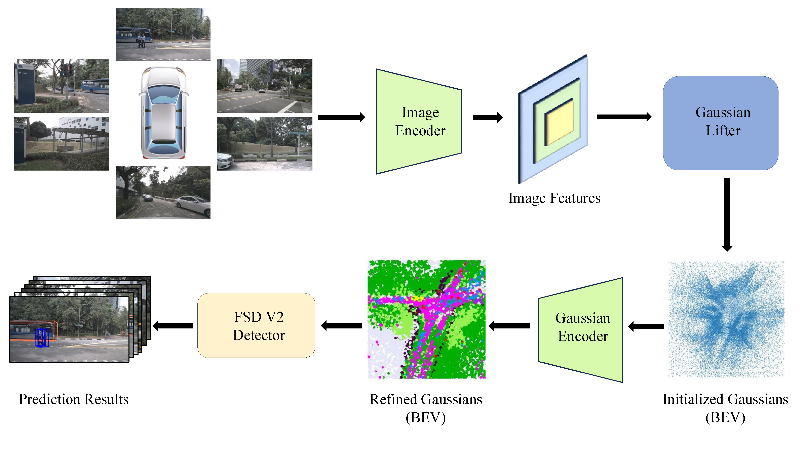
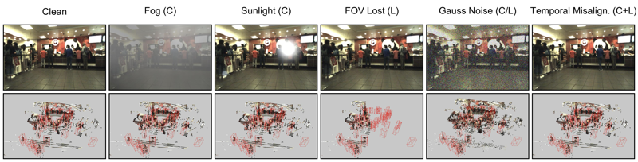

-

GaussianDet3D: Bridging Gaussian Splatting and Sparse LiDAR Detection for Multi-View 3D Object Detection
DriveX Workshop @ CVPR 2026
-

-
MV-PROWL
MV-PROWL: Leveraging Vision Foundation Models for Multiview Person Detection in Industrial Safety Monitoring
Proceedings of the Computer Vision Conference (CVC) 2027